국가가뭄정보포털
농업용수의 가뭄단계별 국민행동요령가뭄단계별 국민행동요령을 꼭! 지켜주세요.
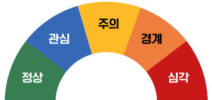
가뭄단계를 클릭해주세요.
-
정상단계
올해도 풍년을 기원합니다.
- 적기 내 작물 파종 및 모내기 실시하기
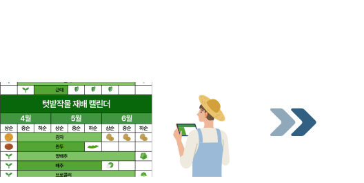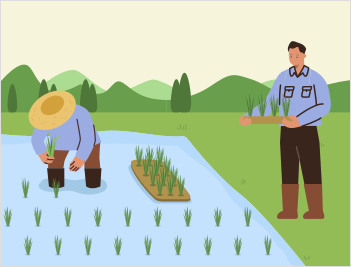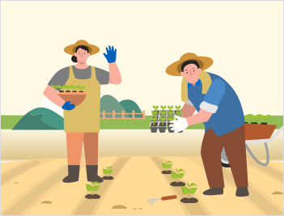 -
관심단계 (약한 가뭄)
가뭄 관심지역은 절수농사를 위한
준비를 시작해야 합니다.- 절수 영농계획 수립하기
-
논 물걸러대기, 비닐피복 등의 절수 재배하기
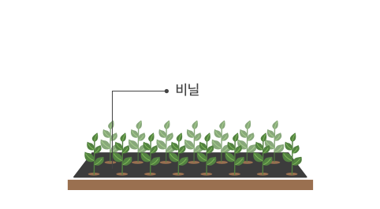
-
용배수로 청소나 수초 제거 등 수로 관리하기
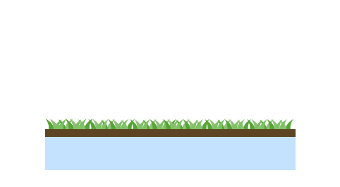 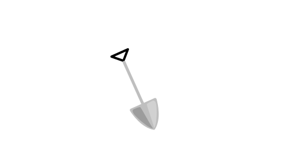 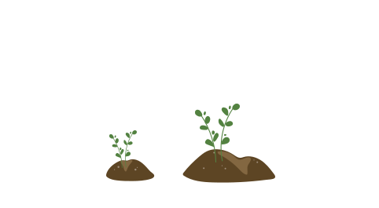
-
주의단계 (보통 가뭄)
가뭄 주의지역은 절수농사를 시작하고
대체급수 준비를 해야 합니다.- 절수 영농계획 실천하기
-
양수기, 관정, 호스 등 점검하기
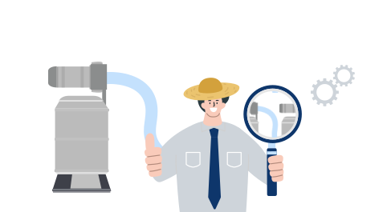
-
배수로·하천의 퇴수 양수
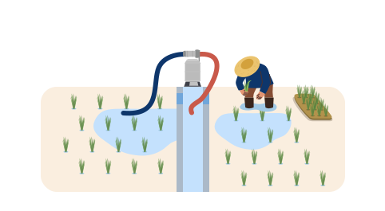 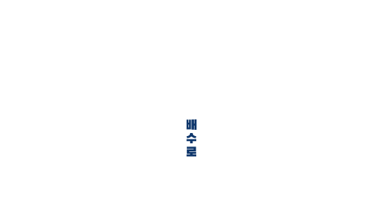
-
경계단계 (심한 가뭄)
가뭄 경계지역은 농업용수 낭비를 막고
대체 수원 개발을 시작해야 합니다.-
배수로에서 흘러나가는 물이 없도록 물꼬 관리하기
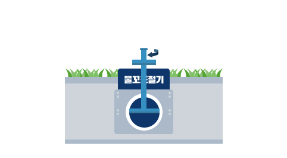 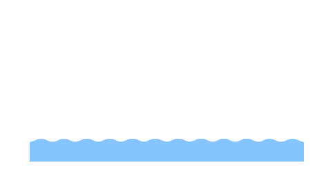
-
가뭄이 우려되는 지역에서는 관정·우물 등 용수원 개발하기
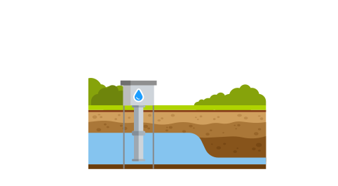 
-
배수로에서 흘러나가는 물이 없도록 물꼬 관리하기
-
심각단계 (극심한 가뭄)
가뭄 심각지역은 국가 가뭄대응
단계별 대응 요령에 적극 동참하시기 바랍니다.- 밭, 과수원 등 급수 가능지 급수 실시하기
-
지하수, 주변 하천수 등 이용 가능한 물을 끌어와 급수하기
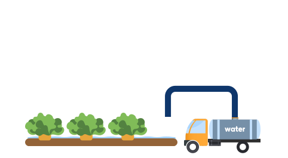
-
모내기 불가 및 파종 지연 지역 타 작물 재배하기
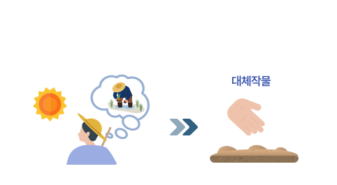
인근 용수 지원시설 및 관련기관을 찾으시려면 아래 링크를 클릭해주세요!
지도로 보는가뭄(원맵) 가뭄119 바로가기